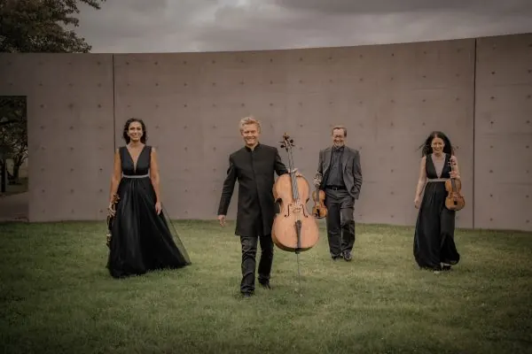
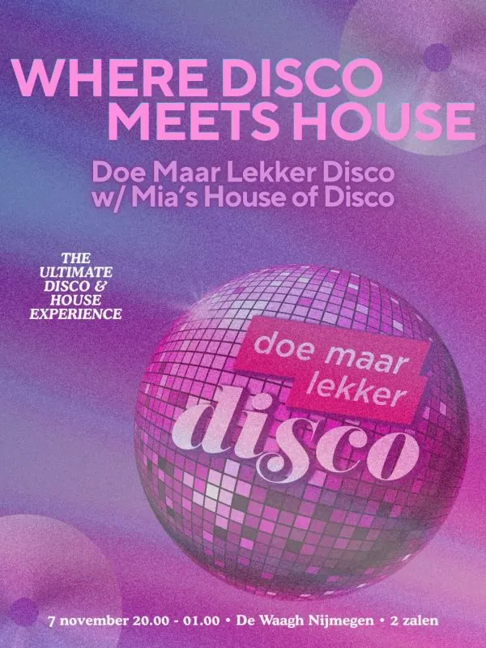
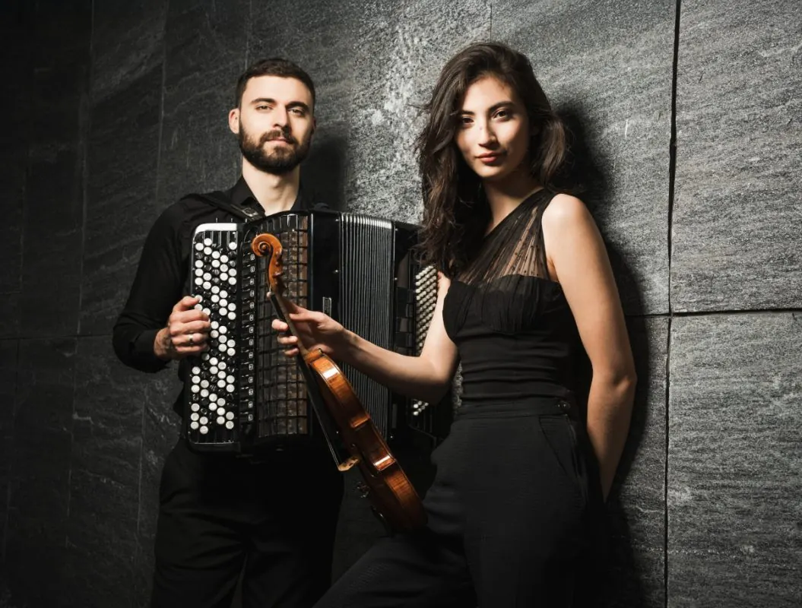
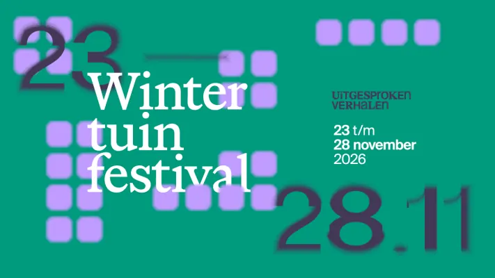
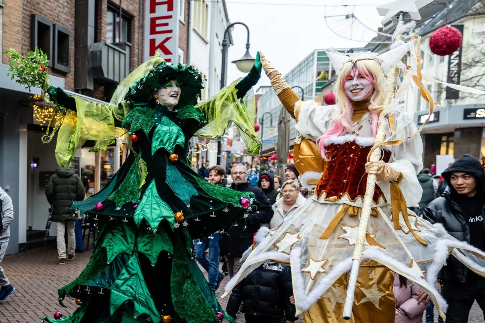

Home › Agenda
Agenda: evenementen in Nijmegen
Concerten, exposities, rondleidingen en markten in Nijmegen en de regio, ook net over de grens. Organiseer je zelf iets? Meld je evenement aan.
Uitgelicht
VrijheidsmuseumNu, t/m 4 aprWojtek! De beer die soldaat werdVrijheidsmuseum
 24 okt, 20.00 uurSean TaylorDe Brauerij
24 okt, 20.00 uurSean TaylorDe Brauerij
 25 okt, 14.00 uurHighlight Tours in het VrijheidsmuseumVrijheidsmuseum
25 okt, 14.00 uurHighlight Tours in het VrijheidsmuseumVrijheidsmuseum
 2 nov, 20.00 uurFilosofisch Cafe bij Café ’t HaantjeCafe 't Haantje
2 nov, 20.00 uurFilosofisch Cafe bij Café ’t HaantjeCafe 't Haantje
 7 nov, 21.00 uurTroost van Oost 2026 met De Triesto’sCafe 't Haantje
7 nov, 21.00 uurTroost van Oost 2026 met De Triesto’sCafe 't Haantje
 8 nov, 15.00 uurMagda Novels bij de BrauerijDe Brauerij
8 nov, 15.00 uurMagda Novels bij de BrauerijDe Brauerij
24 okt, 20.00 uurSean TaylorDe Brauerij
25 okt, 14.00 uurHighlight Tours in het VrijheidsmuseumVrijheidsmuseum
2 nov, 20.00 uurFilosofisch Cafe bij Café ’t HaantjeCafe 't Haantje
7 nov, 21.00 uurTroost van Oost 2026 met De Triesto’sCafe 't Haantje
8 nov, 15.00 uurMagda Novels bij de BrauerijDe Brauerij
Nu te zien

Oktober 2026
24oktUitgelichtSean Taylor24 okt, 20.00 uurDe Brauerij
25oktUitgelichtHighlight Tours in het Vrijheidsmuseum25 okt, 14.00 uurVrijheidsmuseum
25okt Uitwisselingsconcert Harmonie Hatert met DOV Wijchen25 okt, 13.00 uur
27okt
Uitwisselingsconcert Harmonie Hatert met DOV Wijchen25 okt, 13.00 uur
27okt Filmvertoning: Het land van mijn ouders27 okt, 19.00 uurHuis van de Nijmeegse Geschiedenis
28okt
Filmvertoning: Het land van mijn ouders27 okt, 19.00 uurHuis van de Nijmeegse Geschiedenis
28okt De Stevenskerk tot 159128 okt, 20.00 uurHuis van de Nijmeegse Geschiedenis
30oktTent van Troost30 okt – 2 novGrote Markt en Stevenskerk
31okt
De Stevenskerk tot 159128 okt, 20.00 uurHuis van de Nijmeegse Geschiedenis
30oktTent van Troost30 okt – 2 novGrote Markt en Stevenskerk
31okt Halloween bij Pop Culture Arcade31 okt, 12.00 uurPop Culture Arcade
31okt
Halloween bij Pop Culture Arcade31 okt, 12.00 uurPop Culture Arcade
31okt Nijmegen Klinkt31 okt, 15.30 uurStevenskerk
31okt
Nijmegen Klinkt31 okt, 15.30 uurStevenskerk
31okt Halloween festival31 okt – 1 novKloster Graefenthal
Halloween festival31 okt – 1 novKloster Graefenthal
UitgelichtSean Taylor24 okt, 20.00 uurDe Brauerij
25oktUitgelichtHighlight Tours in het Vrijheidsmuseum25 okt, 14.00 uurVrijheidsmuseum
25oktUitwisselingsconcert Harmonie Hatert met DOV Wijchen25 okt, 13.00 uur
27oktFilmvertoning: Het land van mijn ouders27 okt, 19.00 uurHuis van de Nijmeegse Geschiedenis
28oktDe Stevenskerk tot 159128 okt, 20.00 uurHuis van de Nijmeegse Geschiedenis
30oktTent van Troost30 okt – 2 novGrote Markt en Stevenskerk
31oktHalloween bij Pop Culture Arcade31 okt, 12.00 uurPop Culture Arcade
31oktNijmegen Klinkt31 okt, 15.30 uurStevenskerk
31oktHalloween festival31 okt – 1 novKloster Graefenthal
November 2026
1nov Even stil staan bij de dood1 nov, 12.00 uurStevenskerk
1nov
Even stil staan bij de dood1 nov, 12.00 uurStevenskerk
1nov Open Bridge Kampioenschap 2026 Mook, Middelaar en Molenhoek1 nov, 13.00 uurDe Wieken
1nov
Open Bridge Kampioenschap 2026 Mook, Middelaar en Molenhoek1 nov, 13.00 uurDe Wieken
1nov Najaarsconcert Ensemble Sequenza ‘Van schaduw naar licht’ met Valentijn Jeukendrup1 nov, 16.00 uurLutherse kerk
2novUitgelichtFilosofisch Cafe bij Café ’t Haantje2 nov, 20.00 uurCafe 't Haantje
3nov
Najaarsconcert Ensemble Sequenza ‘Van schaduw naar licht’ met Valentijn Jeukendrup1 nov, 16.00 uurLutherse kerk
2novUitgelichtFilosofisch Cafe bij Café ’t Haantje2 nov, 20.00 uurCafe 't Haantje
3nov Krachtige collectieven3 nov, 19.30 uurThiemeloods
5nov“We the People” – 250 USA in koormuziek5 nov, 20.15 uurTitus Brandsma Gedachteniskerk
6nov
Krachtige collectieven3 nov, 19.30 uurThiemeloods
5nov“We the People” – 250 USA in koormuziek5 nov, 20.15 uurTitus Brandsma Gedachteniskerk
6nov Theatervoorstelling Buiten Bereik6 nov, 20.00 uurTheater het Badhuis Nijmegen
7novUitgelichtTroost van Oost 2026 met De Triesto’s7 nov, 21.00 uurCafe 't Haantje
7novUitgelichtMagda Novels bij de Brauerij8 nov, 15.00 uurDe Brauerij
14nov
Theatervoorstelling Buiten Bereik6 nov, 20.00 uurTheater het Badhuis Nijmegen
7novUitgelichtTroost van Oost 2026 met De Triesto’s7 nov, 21.00 uurCafe 't Haantje
7novUitgelichtMagda Novels bij de Brauerij8 nov, 15.00 uurDe Brauerij
14nov UitgelichtPubquiz bij café ’t Haantje14 nov, 20.30 uurCafe 't Haantje
21nov
UitgelichtPubquiz bij café ’t Haantje14 nov, 20.30 uurCafe 't Haantje
21nov UitgelichtHilde Vos Trio22 nov, 15.00 uurDe Brauerij
27nov
UitgelichtHilde Vos Trio22 nov, 15.00 uurDe Brauerij
27nov Kerstmarkt Klooster Graefenthal27 nov – 6 decKloster Graefenthal
28nov
Kerstmarkt Klooster Graefenthal27 nov – 6 decKloster Graefenthal
28nov UitgelichtJohnny and the Rockets28 nov, 20.30 uurCafe 't Haantje
28nov
UitgelichtJohnny and the Rockets28 nov, 20.30 uurCafe 't Haantje
28nov UitgelichtHighlight Tours in het Vrijheidsmuseum29 nov, 14.00 uurVrijheidsmuseum
29nov
UitgelichtHighlight Tours in het Vrijheidsmuseum29 nov, 14.00 uurVrijheidsmuseum
29nov
Even stil staan bij de dood1 nov, 12.00 uurStevenskerk
1novOpen Bridge Kampioenschap 2026 Mook, Middelaar en Molenhoek1 nov, 13.00 uurDe Wieken
1novNajaarsconcert Ensemble Sequenza ‘Van schaduw naar licht’ met Valentijn Jeukendrup1 nov, 16.00 uurLutherse kerk
2novUitgelichtFilosofisch Cafe bij Café ’t Haantje2 nov, 20.00 uurCafe 't Haantje
3novKrachtige collectieven3 nov, 19.30 uurThiemeloods
5nov“We the People” – 250 USA in koormuziek5 nov, 20.15 uurTitus Brandsma Gedachteniskerk
6nov
“Spurensuche” – Kamerconcert met strijkkwartet6 nov, 20.00 uurStadthalle Kleve 6novTheatervoorstelling Buiten Bereik6 nov, 20.00 uurTheater het Badhuis Nijmegen
7novUitgelichtTroost van Oost 2026 met De Triesto’s7 nov, 21.00 uurCafe 't Haantje
7nov
Doe Maar Lekker Disco w/ Mia’s House Of Disco – The Ultimate Disco & House Experience7 nov, 20.00 uurDe Waagh 8novUitgelichtMagda Novels bij de Brauerij8 nov, 15.00 uurDe Brauerij
14novUitgelichtPubquiz bij café ’t Haantje14 nov, 20.30 uurCafe 't Haantje
21nov
“Tanz durch die Epochen” – Kamerconcert met viool en accordeon21 nov, 18.00 uurKleine Kirche 22novUitgelichtHilde Vos Trio22 nov, 15.00 uurDe Brauerij
27novKerstmarkt Klooster Graefenthal27 nov – 6 decKloster Graefenthal
28novUitgelichtJohnny and the Rockets28 nov, 20.30 uurCafe 't Haantje
28nov
Wintertuinfestival28 nov, 20.00 uur 29novUitgelichtHighlight Tours in het Vrijheidsmuseum29 nov, 14.00 uurVrijheidsmuseum
29nov
Stadfeest & Koopzondag: Klever Winterzauber29 nov, 13.00 uur